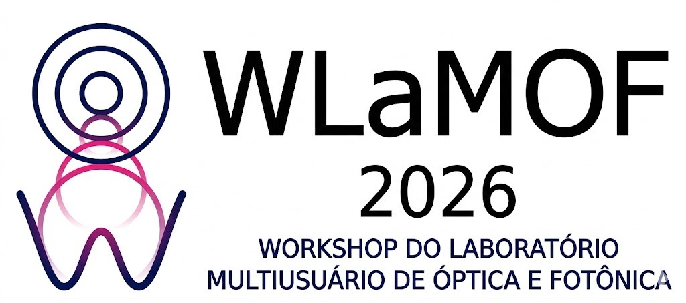

O Workshop do Laboratório Multiusuário de Óptica e Fotônica (WLaMOF 2026) tem como objetivo promover integração científica e divulgação de pesquisas nas áreas de óptica, fotônica e tecnologias associadas.
O evento será realizado na UFLA e contará com palestras convidadas, apresentações institucionais e visita técnica ao LaMOF.